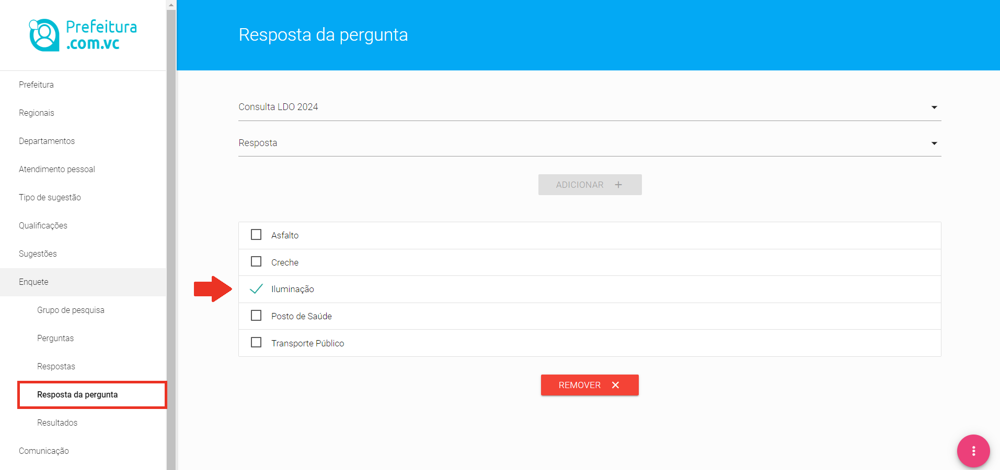

A funcionalidade “Enquete” permite ao Grupo Gestor da Prefeitura fazer a qualquer tempo pesquisas de opinião, utilizando o aplicativo para os cidadãos responderem.
Quando do cadastramento dos Departamentos (Nível 2), é permitido ao Grupo Gestor autorizar ou não cada uma das unidades a fazer pesquisas de forma autônoma. Entretanto, a alternativa mais comum é permitir somente que o Grupo Gestor faça as pesquisas de forma coordenada com cada unidade, evitando assim que o cidadão receba perguntas em excesso, ou mesmo com conteúdo redundantes.
Os Departamentos (Nível 2), portanto, quando não estão autorizadas a fazer as suas próprias pesquisas apenas visualizam no menu enquete o item resultado destinado a mostrar enquetes geradas pelo Grupo Gestor sobre serviços ou com conteúdo do interesse daquela unidade.
Grupos de Pesquisa
Para fins de organização, as pesquisas serão separadas por grupos de pesquisas, que foram criados para agrupar pesquisas com características semelhantes, seja pelo conteúdo da enquete, seja pela secretaria pesquisada, etc.
Desta forma a primeira coisa a ser criada, antes mesmo de se pensar em uma pergunta é criar um ou mais grupos de pesquisa.
Tela para cadastro de Grupo de Pesquisa
Para criar um Grupo de Pesquisa, basta clicar no menu "Enquete", seguido do sub-menu "Grupo de Pesquisa, clicar no botão magenta, canto inferior direito da tela e botão verde, que aparece posterioremente, conforme figura.
Informe apenas o nome do Grupo de Pesquisa, selecione a opção ATIVO ou INATIVO, para o grupo adquirir aquela condição, conforme sua necessidade e finalmente clique no botão ENVIAR para gravar o Grupo de Pesquisa que vo}ê está criando.
Perguntas
A funcionalidade "Perguntas" foi idealizada para dar total flexibilidade e riqueza de opções para as consultas feitas à população.
Tela para cadastro de enquetes
O primeiro passo para se criar uma pergunta é escolher a abrangência geográfica da mesma e ai a ferramenta prefeitura.com.vc permite que sejam escolhidos todos os bairros da cidade ❶ ao clicar na caixa de seleção [check box] ao lado da expressão “para tosos os bairros do município”, ou bairro a bairro ❷; - ao clicar-se na caixa de seleção ao lado da expressão “bairro”, através de uma lista de todos os bairros que abrigam cidadãos que já baixaram o aplicativo para dispositivos móveis.
O segundo passo é escolher, se do interesse dos gestores, um Departamento (Nível 2) ❸; para receber os resultados quando das respostas dos cidadãos.
Depois disso é solicitado no item “NOME” um título para a pesquisa ❹, que servirá para a mesma ser localizada na lista de enquetes criadas pela municipalidade.
Logo abaixo no item “Descrição” se insere a pergunta propriamente dita ❺, isto é, a consulta que vai aparecer no celular para o cidadão responder.
Duas caixas de seleção você deverá marcar logo abaixo ❻:
A primeira, cujo campo se chama “Múltipla Escolha”, serve para informar quantas respostas o cidadão pode escolher, se apenas uma opção, ou se o munícipe pode escoloher mais que uma opção.
A segunda, ativa ou inativa a enquete a qualquer tempo, no caso de ser necessário tirar aquela consulta do ar antes do prazo determinado para o término.
Logo abaixo ❼, são cadastradas as datas de início e término da consulta à população e, finalmente, escolhe-se na caixa de seleção o Grupo de pesquisa ❽ ao qual fará parte aquela enquete particularmente.
Ao clicar ENVIAR, os cidadãos das regiões selecionadas recebem a enquete imediatamente, juntamente com uma notificação no celular para alertá-los da consulta.
Respostas
No menu respostas são inseridas cada opção de resposta de todas as enquetes criadas na Plataforma de Governança Colaborativa prefeitura.com.vc.
A ideia é agrupar todas as respostas nesse menu para que elas possam ser reutilizadas, quando necessário.
Tela para cadastro de respostas
Para cadastrar uma resposta nova, segue-se o mesmo procedimento padrão de inserção de todo novo item na ferramenta, clica-se no botão vermelho, no canto interior direito, escolhe-se o botão verde, com um sinal de “+” e abre-se o formulário de inserção de nova resposta.
Para Inserir a resposta, escolha um dos departamentos Cadastrados, insira no campo "Descrição" o conteúdo da resposta, isto é, o valor que ficará em uma das opções da enquete que aparecerá no celular do cidadão.
Para gravar o conteúdo da opção clique no botão ENVIAR e sua resposta será salva.
Resposta da Pergunta
Essa funcionalidade tem o objetivo de vincular todas as respostas que o cidadão terá no rol de escolha dele para uma dada enquete a determinada pergunta.
Para concluir esse procedimento, basta escolher a pergunta pelo nome dado a mesma, abrir a caixa de seleção que listará todos os itens de respostas cadastradas, escolher o primeiro dos itens que deverá figurar para o cidadão como opção de resposta. Clique no botão ADICIONAR + para inserir o item. Repita a operação para completar a adição de todas as opções daquela determinada enquete.
A operação similar é a remoção de um dado item de resposta. Se for necessário mudar a configuração da enquete, retirando uma opção de escolha, selecione a opção já cadastrada na mesma tela, clicando na caixa de check até ficar com o sintal de "✓",conforme assinalado.

Tela para remover itens de resposta
Clique no botão REMOVER X para retirar o item. Repita a operação para remover tantas opções de resposta daquela determinada enquete quantas necessárias.
Resultado
No menu “Resultado” os gestores do Grupo Gestor (Nível 1), bem como os dos Departamentos (Nível 2) autorizados enxergam os gráficos do resultado da participação popular nas enquetes.
Os resultados são apresentados em gráficos de pizza ou gráficos de barra dependendo da escolha do Gestor e originalmente os dados são mostrado de toda a área de abrangência escolhida.
Resultado da Enquete em Gráfico de Pizza
Clicando-se na caixa de seleção “Todos os bairros”, abre-se uma lista dos bairros consultados e o gestor pode visualizar o resultado da pesquisa bairro a bairro.
Além disso, os Gestores tem a sua disposição nessa tela 4 tipos de relatórios listando informações relevantes de cada consulta realizada, conforme mostrado na figura abaixo:
Relatórios disponíveis relativos a resultados de Enquetes